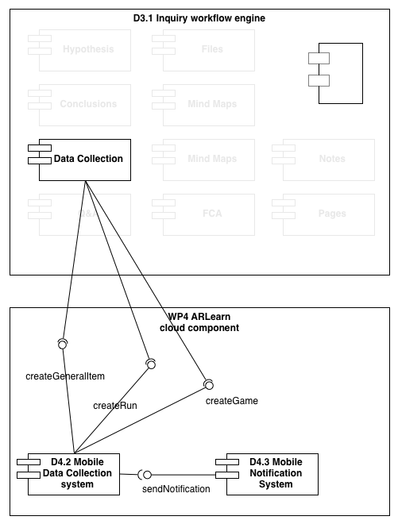

The Data Collection Plugin is an Elgg plugin that enables teachers to specify Data Collection tasks
Architecture
The following diagram illustrates how the Elgg data collection plugin communicates with ARLearn cloud services to create and manage data collection tasks, This diagram highlights some components of the weSPOT architecture.

Data Collection tasks are mapped on the ARLearn messaging framework. Within the weSPOT toolset, ARLearn concepts such as "Game", "Run" and "General Item" (message) are transparent for the end user. However, in order to create a data collection task, the Data Collection plugin uses the following ARLearn web services.
- Create a new ARLearn game. An ARLearn game corresponds to an inquiry and is a container for general items (messages). Read more about ARLearn games here.
- Create a new new ARLearn run. Just like an ARLearn game, an inquiry also corresponds to a run. In ARLearn, games can be repeated with different teams of user through the run concept. Within weSPOT this is not important, so only one run will exist for an inquiry/game. Read more about ARLearn runs here.
- Finally, the data collection task will be created as a general item. As a result of this creation, ARLearn will send a notification to all users registered to the run/inquiry.
Software Components
This scenario relies on the following components
-
ARLearn. The ARLearn framework is used to manage data collection tasks. This framework includes both cloud based service components and client based mobile applications.